Британський бренд побутової техніки, який спеціалізується на виробництві кухонних комбайнів, блендерів, кавоварок та іншої техніки для приготування їжі.
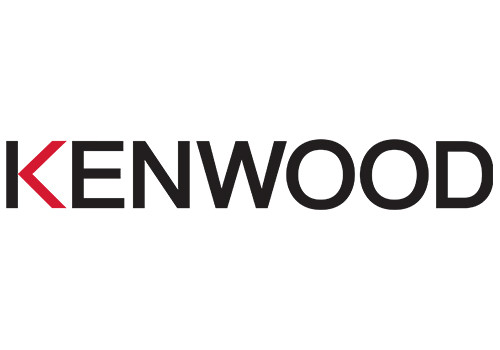
Польський виробник побутової техніки для кухні та дому, відомий своєю практичністю та сучасним дизайном.
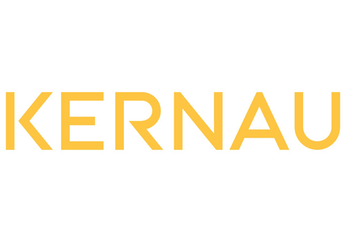
Європейський бренд побутової техніки, що пропонує сучасні рішення для кухні та дому.
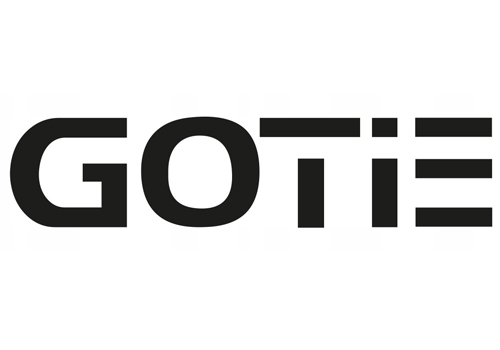
Американський бренд із понад 100-річною історією, відомий планетарними міксерами та іншою технікою преміум-класу.
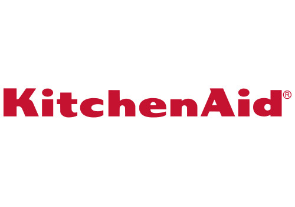
Італійський виробник кавоварок і кавових автоматів, що асоціюється з якістю та справжньою кавовою культурою.
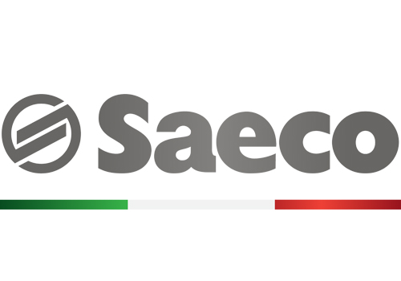
Нідерландський концерн, один із найбільших виробників побутової техніки, електроніки та медичного обладнання.
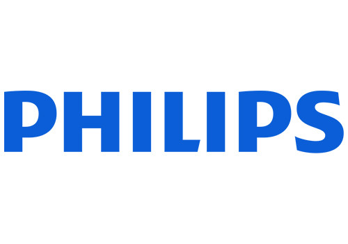
Міжнародний бренд, відомий своїми мультиварками та "розумною" технікою для дому.
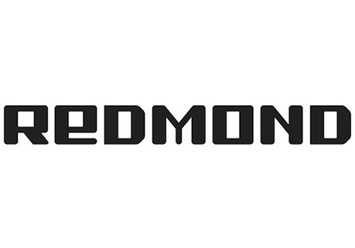
Французький бренд, відомий посудом із антипригарним покриттям та побутовою технікою.
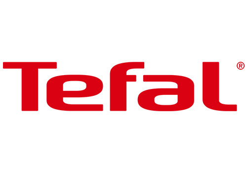
Американська корпорація, один із найбільших світових виробників побутової техніки.
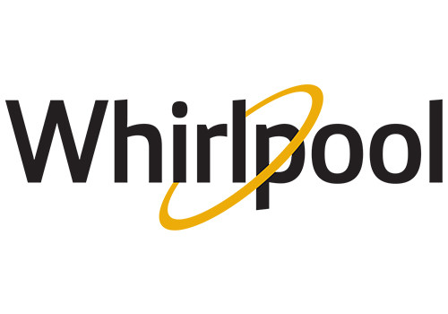
Італійський бренд із понад 100-річною історією, що виробляє побутову техніку для кухні та дому.
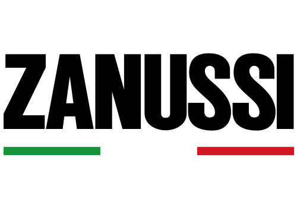
Супутниковий інтернет від американської компанії SpaceX. Забезпечує стабільне швидкісне зʼєднання там, де немає звичайного інтернету: вдома, у дорозі чи на обʼєкті. Незамінне рішення для бізнесу та резервного звʼязку.
Китайський виробник 3D-принтерів, заснований інженерами з досвідом у DJI. Принтери Bambu Lab вирізняються високою швидкістю друку, точністю та простотою налаштування. Підходять як для дому, так і для професійного використання.
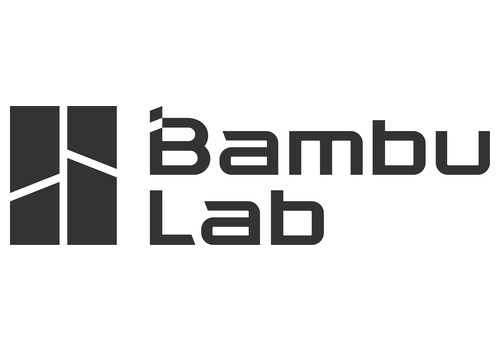
Міжнародний виробник портативних зарядних станцій, сонячних панелей та систем резервного живлення. Техніка EcoFlow забезпечує автономність дому й бізнесу під час відключень світла. Бренд поєднує потужність, швидку зарядку та компактність.
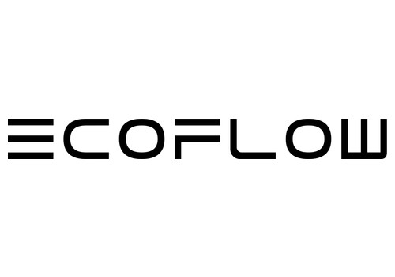
Британська технологічна компанія, відома бездротовими пилососами, фенами та очищувачами повітря. Dyson вирізняється інженерними інноваціями та впізнаваним дизайном. Кожен пристрій створюється з акцентом на продуктивність і довговічність.
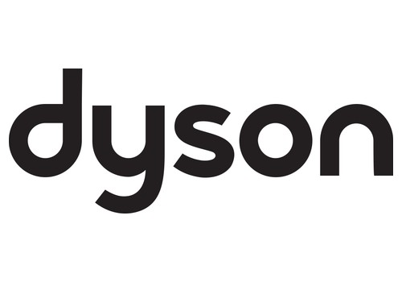
Італійський бренд, заснований 1902 року, один зі світових лідерів у виробництві кавомашин. Також випускає кухонну техніку, обігрівачі та кондиціонери. De'Longhi поєднує італійський стиль і надійність.
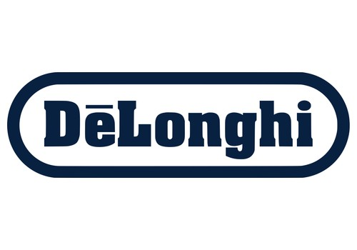
Німецький бренд із понад 100-річною історією, відомий електробритвами, епіляторами та кухонною технікою. Braun славиться функціональним дизайном і німецькою якістю. Продукція бренду служить роками.
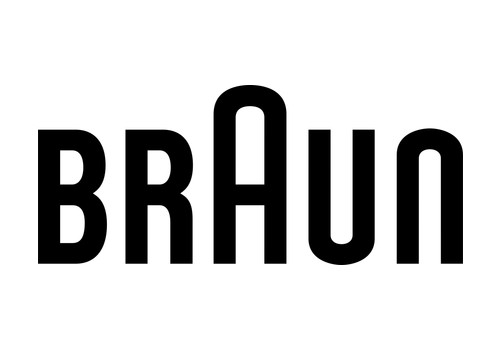
Південнокорейський технологічний гігант, один із найбільших виробників електроніки у світі. Samsung випускає телевізори, смартфони, холодильники, пральні машини та іншу техніку. Бренд відомий інноваціями та сучасним дизайном.
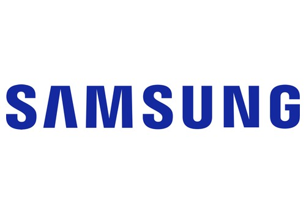
Південнокорейська компанія, світовий лідер у виробництві телевізорів OLED і побутової техніки. Асортимент LG включає пральні машини, холодильники, кондиціонери та аудіосистеми. Бренд поєднує розумні технології та енергоефективність.
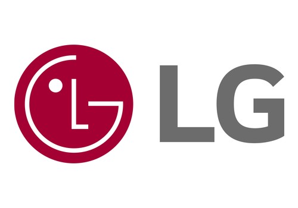
Бренд кухонної техніки з австралійським корінням (Breville), відомий професійними еспресо-машинами для дому. Sage також виробляє кавомолки, блендери, соковижималки та духовки. Техніка створена для тих, хто цінує якість приготування.
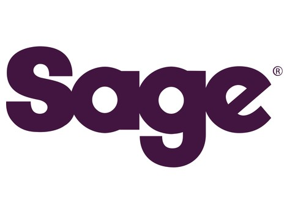
Технологічна компанія, що створює окуляри доповненої реальності. Окуляри XREAL перетворюють смартфон, ноутбук чи консоль на великий віртуальний екран. Легкі, стильні та зручні для роботи, ігор і кіно.
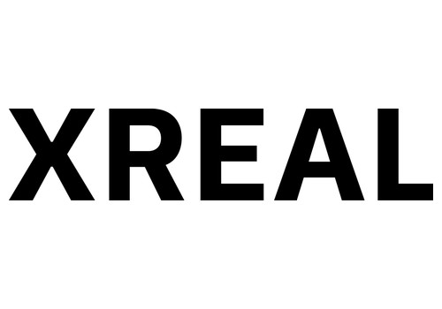
Словенський виробник побутової техніки із понад 70-річною історією. Gorenje випускає холодильники, плити, духові шафи, пральні та посудомийні машини. Бренд відомий сучасним європейським дизайном і надійністю.
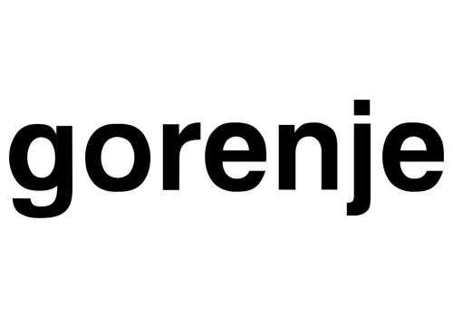